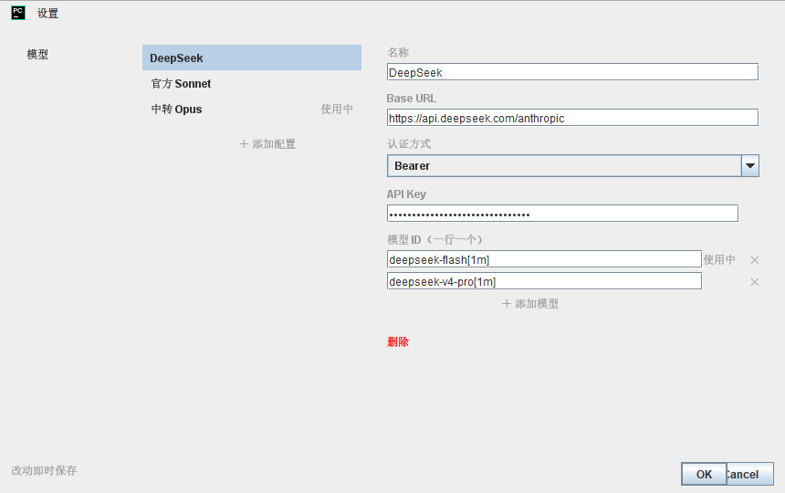
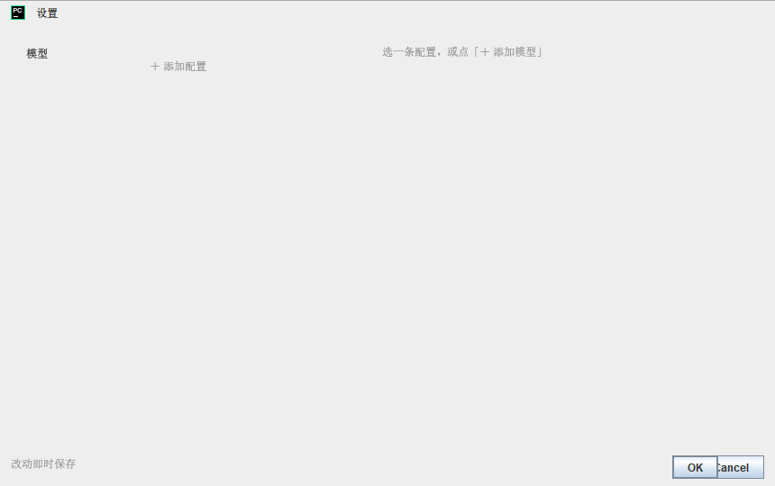

CCoder · 设置对话框 · 重设计
齿轮点开的那个「设置」对话框。它丑不丑先不争论 —— 下面第一张图是 探针画出来的真机截图，不是重画的。三个方案的差别不在配色， 在这个对话框该有几个栏、左栏那 132px 拿来干嘛。
2026-09-15：用户原话「设置界面太丑了，出几个网页方案给我选择」。本页只画不改 —— 选定之后照本仓库规矩走：改代码 → 跑探针离屏出图看一眼 → 再收工。 注释里那条「单测看属性，看不出好不好看」的教训，就是这么来的。
已选定（2026-09-15）：方案 C —— 四个页签，两处设置合成一处。
当天落地：SettingsDialog（外壳 + 手写页签栏）+ SettingsPage
+ 四个页类；ModelProfilesDialog 拆成外壳与 ModelProfilesPage；
plugin.xml 里那个 projectConfigurable 与
ClaudeSettingsPanel.kt 一并删掉（选了"直接删"）。
「权限模式」「思考深度」在对话框里改完会立刻作用到正在跑的会话——
那两条改动由 ui/SettingsApply.kt 判定，ClaudePanel 在关框后对账。
落地时与图上有三处不同，都是看了图才发现该改的：
① 权限页多了一句跟着下拉走的模式说明（光有"仅规划""不询问"这种名字，
用户不知道选下去意味着什么）；② 环境页的两张表没有用平台的
ToolbarDecorator —— 它构造时要 ActionManager，
而单测 JVM 里没有 Application，整页既跑不了用例也出不了图，改成手写的「＋ / －」；
③ 「浏览…」也是手写的：平台那个 TextFieldWithBrowseButton 的
「…」是 ExtendableTextField 的内嵌扩展，离屏摆版时落在字段外面。
页签栏 140px 是量出来的，不是照着这张图抄的：对话框内容区左右各让出 12px
（平台的边框），页宿主实际只有 696 宽 —— 一开始按 720 算，表单栏压过列表栏 24px，
把列表右边那列「使用中」盖住了，而单测全绿。
下面是当前代码（ModelProfilesDialog.kt）的真实渲染，
由 ModelProfilesDialogProbe 离屏画出，尺寸 1:1。

1 2 3 4 5 6 7 8
重新出图：PATH="/c/Program Files/nodejs:$PATH" ./gradlew test --tests 'com.ccoder.settings.ModelProfilesDialogProbe'
→ build/probe/model-profiles-dialog.png
x=382 这条线上一条线都没有）—— 左中右糊成一片，
眼睛得自己找"哪里是新的一栏"。一条配置都没有时，表单区写的是「选一条配置，或点「＋ 添加模型」」。 可建整条配置的那个按钮叫「＋ 添加配置」（在左栏）；「＋ 添加模型」是进到表单里 给一条配置**添一行模型**用的 —— 空态下它根本不在屏幕上。 新用户照着这行字找按钮，找不到。

空态的真机出图。rebuildForm() 里那句文案写错了按钮名 —— 一行就能修，跟选哪个方案无关。
2026-09-13-model-profiles-design.md §7）。交互一个字节都不改：还是点左边列表、右边改表单。改的只有三件事 —— 左栏不再假装自己是页签（改成"列表栏"，顶上一个小标题 + 一个 ＋）； 表单按语义分成三组；删除按钮像个按钮。860×540 尺寸不变， 省下来的 132px 全给表单，「模型 ID」那些框终于不用挤。
没有"左边选、右边改"这回事了。整页就是一列配置卡片：收起来是一行 （名字 + 端点 + 模型数 + 〔使用中〕），点一下就地展开成表单。 字段改成标签在左、输入在右的两列 —— 2026-09-13 那份设计稿原本画的就是这个， 实现时变成了"标签在上"。窗口也就不用 860 那么宽了，720×580 就够。
listRow / rebuildForm / refresh 三处的分工没了，
换成"哪张卡展开着"这一份状态。ModelProfilesDialogSaveTest 里那一堆
"点列表行"的辅助函数全得改
左栏丑的根子是它承诺了四个页签、只兑现了一个。那就兑现：把
IDE 里那页 Settings → Tools → CCoder（claude 路径、权限模式、思考深度、
发送快捷键、额外目录、环境变量）搬进来，左栏变成真导航。
用户再也不用记"哪项设置在哪个地方" —— 现在这个问题的答案是"两个地方都有"。
ClaudeSettingsPanel 现有的那六项，换个地方摆）
Configurable.apply/reset，这个对话框走"改一个字段立刻落库"，
合并时要统一成一种ClaudeSettings ——
现在它只碰 ModelProfiles，那份干净是它好测的原因之一（探针里那个假 Project 就是为它准备的）三个方案治的是同一批毛病，差别在动到多深。我的建议是 A，理由三条：
2026-09-13-model-profiles-design.md 选定方案 A），没必要为了好看把它换掉。什么时候该选 B：如果你觉得"左边列表右边表单"本来就不对， 配置这东西就该像浏览器书签一样一列排下来 —— 那是产品判断，不是审美判断， 换过来的代价是重写交互层。
什么时候该选 C：如果"设置散在两个地方"这件事已经真的烦到你了。 C 是唯一能治这个根的方案，但它得先把 IDE 那页的去留定下来 —— 那是另一个决定， 值得单独拿出来说，不该塞在"这个对话框好不好看"里顺带做掉。
三案都有一个共用的零头（现在就能修，不依赖选择）：空态那句 「点「＋ 添加模型」」写错了按钮名，应该是「＋ 添加配置」—— 它现在指着一个屏幕上不存在的按钮。
| A · 去页签两栏 | B · 卡片展开 | C · 真页签四页 | |
|---|---|---|---|
| 窗口尺寸 | 860×540 不变 | 720×580（变窄） | 860×560（略高） |
| 页签位 | 删掉 | 不需要 | 真的用起来 |
| 改交互 | 否 | 是 | 否（但改保存语义） |
| 动 ClaudeSettings | 否 | 否 | 是 |
| 探针用例 | 加 2 张图 | 重写 | 重写 + 新页 |
| 改动量（估） | 1 个文件 | 重写两栏 | A 的三倍 |